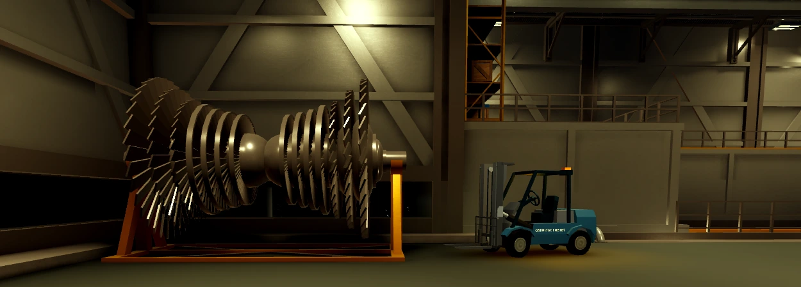

Updates
We all love an update!
Hotfix 3 [Version 0.2.5 BETA]
❌ Removed Features:
- Removal of the reactor explosion event.
Special Message from the Devs:
"Hey everyone,
I bring unfortunate news, however, due to recent Roblox moderation changes regarding real-world tragedies, and due
to Nediah's Halska unfortunate removal. I'll be making some adjustments to ensure the game stays within platform
guidelines until further notice.
Starting today, the reactor explosion event will be temporarily removed from the game. This change is being made to
avoid any risk of removal or moderation action due to its undeniable relation with the Chernobyl disaster.
The rest of the game will remain playable as usual, and this decision is purely to keep the experience available for
everyone. We'll be working on how to reintroduce it in a way that fits Roblox's updated rules.
Thanks for your understanding and continued support. 🧡"
Hotfix 2 [Version 0.2.5 BETA]
New Features:
- Brought "Oof" back
- Faster run speeds, new animation, and reworked footsteps to prepare for Version 0.2.6
🔧 Bug Fixes:
- Patched spamming random failures for additional points
- Patched Fuel channel leaks (leaks steam instead of increasing)
- Fixed deaerators not repairing after engineering was called
Hotfix 1 [Version 0.2.5 BETA]
Changed Features:
- Lowered cuff minimum security points to 25k
- Updated operator point offload gain to 1/2 instead of 1/3
🔧 Bug Fixes:
- Fixed car colours
- Fixed tags randomly disappearing
[Version 0.2.5 BETA]
New Features:
- Recoded vehicles on the client
- Shutdown Checklist
- Point bonus for safe shutdowns, with achievement
- Shift Manager / Supervisor achievement
- New "All Time Leaderboard" (Top 6 players)
- Visitor Card system (Limited access for visitors)
- Restricted access: Alarm test, SCRAM, turbine trip/breakers disabled for visitors
- Security points now tracked separately from operator points
- Separate ranks for Security roles
- Operator point offload: 1/3 of points contribute to Security
- Baton added for Officer rank
- Turnstiles cycle by default on keycard swipe
- Donator name tag addon
- Phone now has animation when used
- New hazmat suits created
- Private server owners can now use `/kick [player name]`
- Drivable forklifts
- Loading screen & main menu UI overhauled
- Disclaimer and rules now shown in public servers
- Automatic deaerator control added
- Removed FNAO Event
- ECCS reworked: Limited nitrogen, can’t refill while pressurized
- New core heat distribution display
- AFK status displayed if no input after 3 and a half minutes
- New Gamepass: Spawn with Geiger counter
🔧 Notable Fixes:
- Fixed turbine blade ordering issues
- Fixed being stuck on phone after resetting
- Music volume setting now saves correctly
- Fixed player locator highlight not clearing on reset